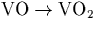

Next: Trimer formation
Up: Oxygen-Oxygen defects
Previous: Experimental Evidence
Rapidly diffusing dimer pairs allows us to explain many of the
apparently anomalous defect formation behaviour of other complexes in
silicon. These have been discussed in the relevant chapters but are
summarised briefly here:
- 1.
- There are several different formation process for VO2, and
one of these does not result in any loss of [Oi]; indeed, Oi is
produced when  by this unknown process. It
seems likely this is the breakup of VO followed by trapping of V by a
dimer (Chapter 5).
- 2.
- The anomalous formation of thermal donors has been discussed
briefly here, and in more depth in Chapter 9. It seems
that thermal donors are formed through the aggregation of rapidly
diffusing dimers.
- 3.
- In the early stages of annealing C-rich Cz-Si there is strong
Cs and CsOi signals; after anneals at 450
 C these are
replaced with a weaker CsO2 signal and stronger CsO3
signal [239]. These can form through dimer aggregation
to the earlier Cs and CsOi defects, and this is discussed
further in Chapter 10.
C these are
replaced with a weaker CsO2 signal and stronger CsO3
signal [239]. These can form through dimer aggregation
to the earlier Cs and CsOi defects, and this is discussed
further in Chapter 10.
The work performed on NNO defects involved anneals in temperature
ranges at which the dimer is no longer stable.
Next: Trimer formation
Up: Oxygen-Oxygen defects
Previous: Experimental Evidence
Chris Ewels
11/13/1997